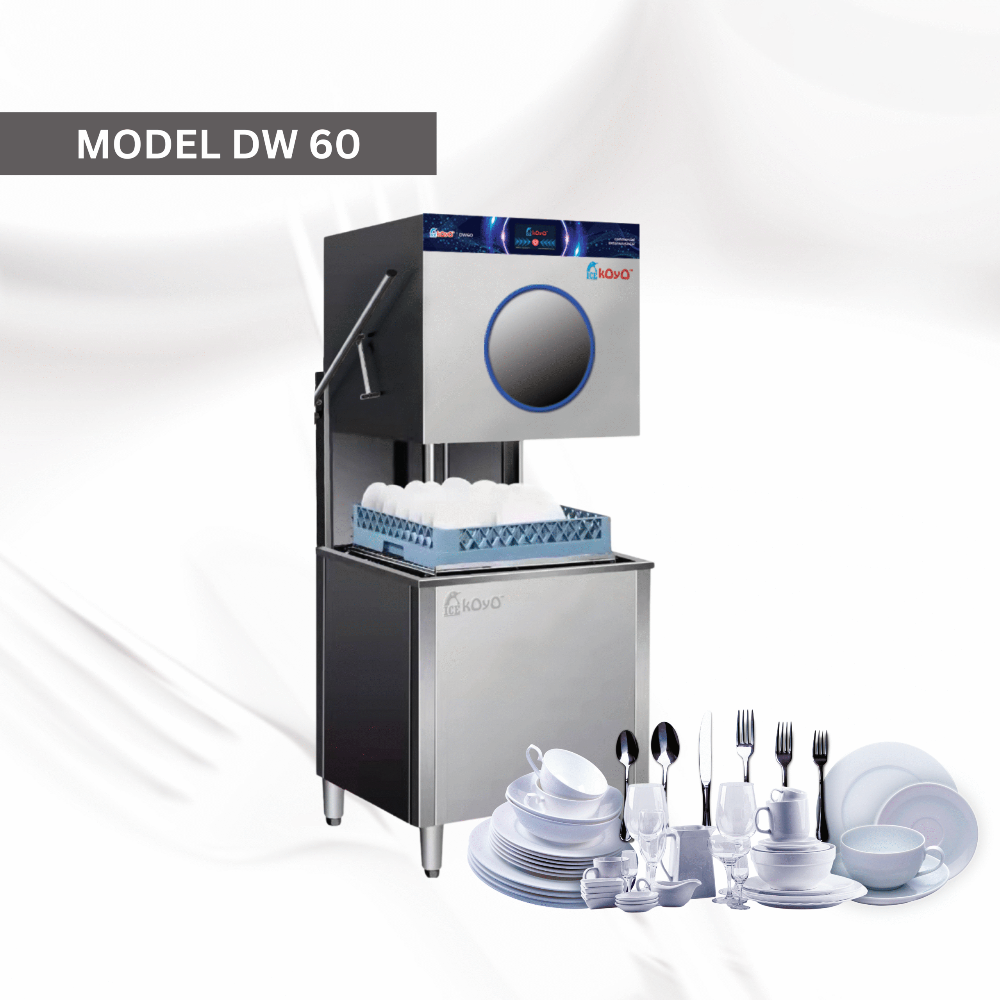

In the fast-paced food and beverage industry, efficiency is the invisible engine behind every successful brand. As hundreds of entrepreneurs prepare to gather at the Kuala Lumpur Convention Centre (KLCC) from July 23 to 25 for Franchise Expo Malaysia, operational optimization is top of mind. Organized by the Malaysia Retail Chain Association (MRCA), FEM 2026 is set to host over 500 exhibiting booths, making it the premier destination to discover the future of retail and hospitality.
For anyone looking to scale a new or existing food business franchise, your back-of-house operations can make or break your profit margins. Among the critical upgrades on display this year, none is more vital to day-to-day survival than advanced restaurant kitchen equipment. Specifically, integrating a reliable Koyo dishwasher into your workflow is becoming the industry gold standard for handling high-volume demands.
Many local eateries start out relying on manual labor to clear their tables, but as a business grows, hand-washing quickly becomes a major operational bottleneck. Slow dish turnaround causes service delays, crowded wash basins create accidental dish breakages, and inconsistent water temperatures risk failing strict local health regulations.
Upgrading to a heavy-duty commercial dishwasher eliminates these pain points entirely:
For Malaysian operators, finding the best dishwasher Malaysia has to offer means looking for equipment engineered specifically for heavy, nonstop workloads. Koyo has established itself as a trusted name across the country—powering household F&B giants like Zus Coffee, Haidilao Hot Pot, and Johnny's—by delivering industrial-grade durability that independent business owners can rely on.
Modern food service demands more than just raw cleaning power; it requires intelligent tracking. The latest lineup of Koyo automated systems brings smart kitchen technology straight to your phone or management dashboard.

These high-tech machines feature built-in Internet of Things (IoT) connectivity, allowing restaurant managers to monitor real-time usage data, track utility consumption, and run remote diagnostic health checks. Furthermore, these smart systems ensure that premium cleaning solutions—like Koyo’s specially formulated Dish Care and Rinse Care detergents—are dispensed in precise, economical amounts, guaranteeing spotless results without wasting a single drop of product.
Whether your layout requires a compact undercounter unit for a cozy cafe, an ergonomic hood-type setup (like the popular Koyo DW60) for a busy bistro, or a massive, continuous industrial dishwasher conveyor system for a central kitchen, there is a tailored configuration built to match your exact floor plan and workflow.
Investing in new machinery is a major milestone, and seeing these systems live is crucial before making a final decision. Attending Franchise Expo Malaysia gives you an exclusive, hands-on opportunity to see cutting-edge restaurant kitchen equipment perform in real-time.
With over 18,000 motivated visitors expected to walk through the doors at FEM 2026, the exhibition halls will be buzzing with live demonstrations, networking opportunities, and face-to-face consultations with industry experts. You can evaluate the build quality, feel the heavy-duty stainless steel construction, and speak directly with technical specialists to map out a custom kitchen layout that maximizes your space and minimizes your labor costs.
As the competitive landscape of the Malaysian food industry continues to evolve, keeping your operational costs low and your hygiene standards high is non-negotiable. A premium commercial dishwasher is no longer a luxury asset—it is an absolute necessity for sustainable growth.
Make sure to prioritize your back-of-house workflow at Franchise Expo Malaysia this year. Investing in a Koyo dishwasher means protection for your brand's reputation, faster table turnarounds for your staff, and an optimized bottom line that allows your food business franchise to thrive for years to come.